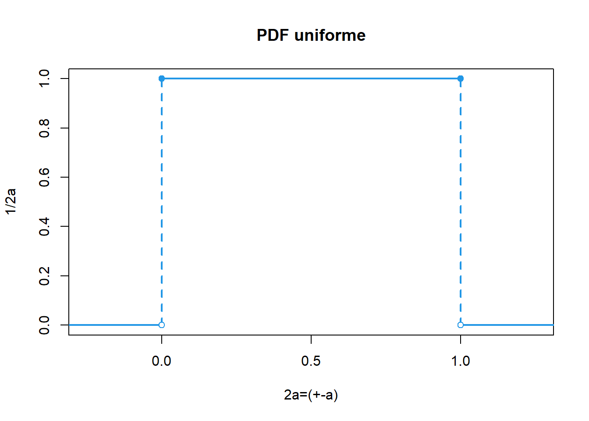

Introduccción
Un autobús llega siempre a una parada particular entre las 8:00 y las 8:10 a.m. y que la probabilidad de que llegue en cualquier subintervalo dado es proporcional sólo a la duración del subintervalo.
Es igual de probable que llegue entre las 8:00 y 8:02 a que llegue entre las 8:06 y las 8:08. Denote con Y el tiempo que una persona deba esperar para que llegue el autobús si llegó a la parada exactamente a las 8:00. Si con cuidado medimos en minutos cuánto tiempo después de las 8:00 llegó el autobús en varias mañanas, podríamos desarrollar un histograma de frecuencia relativa para los datos.
\[P(0 ≤ Y ≤ 2) = P(6 ≤ Y ≤ 8)\]
En una distribución rectangular cada valor en un intervalo dado tiene la misma probabilidad, o sea la función de densidad de probabilidad es constante en este intervalo.
Sea \(X∼U(a,b)\), es decir, una variable aleatoria con distribución uniforme en el intervalo (a,b), con \(a,b \quad \varepsilon \quad \mathbb{R}\):
\[ f(x)=\begin{cases} \frac{1}{b-a}, & \mbox{si x $\varepsilon \quad \mathbb{R}$,}\\ 0, & \mbox{e.o.c.} \end{cases} \]
\[P(a \leq X \leq b)=P(a< X <b)=P(a\leq X < b)= P(a < X \leq b)\]
\[E(x)=\frac{a+b}{2}\]
\[E(x)=\frac{(b-a)^2}{12}\]

Se usa para estimar la incertidumbre cuando:
Un certificado da unos límites sin especificar el nivel de confianza (por ejemplo, 25 mL \(\pm\) 0,05 mL)
Se ha hecho una estimación en forma de un rango máximo (\(\pm\)a) sin conocimiento de la forma de la distribución.
https://huggingface.co/spaces/FreddyHernandez/discrete_uniform
El rango de una distribución de probabilidad se refiere al conjunto de todos los posibles valores que puede tomar una variable aleatoria en esa distribución. Es la diferencia entre el valor máximo y el valor mínimo de esta variable.
Algunas variables aleatorias continuas en física, administración y ciencias biológicas tienen distribuciones de probabilidad aproximadamente uniformes. Por ejemplo, suponga que el número de eventos, como las llamadas que entran en un conmutador, que se presentan en el intervalo (0, t) tienen una distribución de Poisson. Si se sabe que exactamente uno de estos eventos ha ocurrido en el intervalo (0, t), entonces el tiempo real del suceso está distribuido de manera uniforme en este intervalo.
Ejemplo La llegada de clientes a una caja en un establecimiento sigue una distribución de Poisson. Se sabe que durante un periodo determinado de 30 minutos, un cliente llega a la caja. Encuentre la probabilidad de que el cliente llegue durante los últimos 5 minutos del periodo de 30 minutos.
Solución
El tiempo real de llegada sigue una distribución uniforme en el intervalo de (0, 30). Si Y denota el tiempo de llegada, entonces \[P(25 ≤Y ≤30)=\int_{25}^{30}=\frac{30-25}{30}=\frac{5}{30}=\frac{1}{6}\] La probabilidad de que la llegada ocurra en cualquier otro intervalo de 5 minutos también es 1/6.
Ejercicios 1. Suponga que la temperatura de reacción X (en °C) en cierto proceso químico tiene una distribución uniforme con A=-5 y B= 5.
Calcule P(X < 0).
Calcule P(2.5 < X < 2.5)
Calcule \(P( -2\leq X \leq 3)\)
Para que k satisfaga -5<k< k+ 4< 5, calcule P(k < X < k+ 4).
Determine la función de densidad de probabilidad de X y trace la curva de densidad de correspondiente.
¿Cuál es la probabilidad de que el tiempo de preparación exceda de 33 min?
¿Cuál es la probabilidad de que el tiempo de preparación esté dentro de dos min del tiempo medio? [Sugerencia: Identifique $$en la gráfica de f(x).]
Con cualquier a de modo que 25 <a <a +2 <35, ¿cuál es la probabilidad de que el tiempo de preparación esté entre a y a+2 min?
f (x) =0.1 para 25<x<35 y 0 de otro modo
0.20 c. 0.40 d. 0.20
¿Cuáles son la media y la varianza de la profundidad?
¿Cuál es la función de distribución acumulativa de la profundidad?
¿Cuál es la probabilidad de que la profundidad observada sea cuando mucho de 10? ¿Entre 10 y 15?